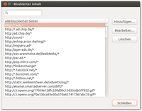

Tipps
Archivierte Anleitung
Dieser Artikel wurde archiviert, da er - oder Teile daraus - nur noch unter einer älteren Ubuntu-Version nutzbar ist. Diese Anleitung wird vom Wiki-Team weder auf Richtigkeit überprüft noch anderweitig gepflegt. Zusätzlich wurde der Artikel für weitere Änderungen gesperrt.
Zum Verständnis dieses Artikels sind folgende Seiten hilfreich:
- Suchmaschinen hinzufügen
- Suchmaschinen editieren
- Inhaltsfilter
- Problematische Seiten
- BitTorrent-Funktion
- Cache
- GtkLP hinzufügen
- Internetspuren löschen
- Weitere Einstellungen
- Speicherverbrauch begrenzen
- Oberfläche beschleunigen
- Speed Dial erweitern
- Unicode-Eingabe
- Autoscroll-Funktion einschalten
- Links
Dieser Artikel dient als Ergänzung zum Hauptartikel Archiv/Opera 12 und beschreibt die Integration neuer Suchmaschinen, eines Werbeblockers und weitere Tipps und Tricks, um das Programm an die eigenen Bedürfnisse anzupassen.
Suchmaschinen hinzufügen¶
Achtung!
Zur Bearbeitung der Dateien search.ini oder urlfilter.ini mit externen Programmen muss Opera immer beendet werden.
Methode Eins¶
Ab Opera Version 9 kann man ganz einfach manuell neue Suchmaschinen hinzufügen. Auf der Webseite, deren Suchmaschine hinzugefügt werden soll, einen  Rechtsklick auf das Suchfeld und dann "Suchmaschine anlegen" aus dem Kontextmenü auswählen. Nach Auswahl eines Buchstabens kann der neue Suchmaschineneintrag genutzt werden.
Rechtsklick auf das Suchfeld und dann "Suchmaschine anlegen" aus dem Kontextmenü auswählen. Nach Auswahl eines Buchstabens kann der neue Suchmaschineneintrag genutzt werden.
Methode Zwei¶
Mittels einer angepassten search.ini, die man herunterladen kann. Diese beinhaltet einige nützliche Suchmaschinen. Falls man diese search.ini  benutzen möchte, muss sie in den versteckten Ordner ~/.opera/ im Homeverzeichnis des angemeldeten Benutzers verschoben werden. U.a. sind die folgenden Suchmaschinen berücksichtigt:
benutzen möchte, muss sie in den versteckten Ordner ~/.opera/ im Homeverzeichnis des angemeldeten Benutzers verschoben werden. U.a. sind die folgenden Suchmaschinen berücksichtigt:
Google.de
Wikipedia.de
Duden.de (Duden Wörterbuchsuche)
Amazon.de
Geizhals.de
Ebay.de
Örtliche.de
google.maps.de
map24.de
Leo Dictionary (en-de) (Deutsch-Englisch Übersetzung)
Wortschatz Uni Leipzig
Flickr.com Web Foto Suche
Klack.de Programmfinder
Filmstarts.de
Ubuntu.com Wiki
Suchmaschinen editieren¶
Eine rudimentäre Funktion, um Suchmaschinen zu editieren, ist in Opera unter "Extras -> Einstellungen -> Suche" enthalten.
Inhaltsfilter¶
Methode Eins¶
Opera ist mit einen integrierten Werbeblocker ausgestattet. Auch Flash-Werbebanner können damit ganz einfach geblockt werden. Dazu einfach mit in die Webseite klicken, das zu blockende Element auswählen und "Inhalt blockieren" wählen. Soll nur ein einzelnes Element geblockt werden (ohne dass alle Bilder auf der Webseite verschwinden) so wählt man das Element mit gedrückter
Strg -Taste aus.
Methode Zwei¶
Über "Extras -> Weiteres -> Blockierter Inhalt" kann man blockierte Inhalte einsehen, hinzufügen, editieren oder löschen. 
Methode Drei¶
Man kann entweder eine fertige Liste zu blockierender URLs herunterladen (s.u.) oder eine eigene Liste pflegen. Beim manuellen Erstellen der Datei urlfilter.ini ist folgendes zu beachten:
es sollte ein Eintrag [include] mit dem Inhalt
*existierendie Liste [exclude] hat eine höhere Priorität als die Liste [include]. Zum Ändern muss der Eintrag
prioritize excludelistauf0gesetzt werden.folgende Platzhalter werden unterstützt:
*für beliebig und?für ein Zeichendas Filtern von IP-Adressen ist möglich
Achtung!
Zu umfangreiche Blocklisten in urlfilter.ini verlangsamen der Start von Opera teilweise erheblich und können zur Folge haben, dass Webseiten nicht komplett oder fehlerhaft angezeigt werden. Inhalts-Blockierungen können auch pro Webseite ein/ausgeschaltet werden. Siehe Abschnitt Blockierter Inhalt.
Zum manuellen Erstellen die Datei ~/.opera/urlfilter.ini erstellen oder öffnen [1]. Dort folgenden Text einfügen bzw. ergänzen (die Sektion [exclude] ist nicht aktuell und dient hier nur als Beispiel!):
Opera Preferences version 2.1 ; Do not edit this file while Opera is running ; This file is stored in UTF-8 encoding [prefs] prioritize excludelist=1 [include] * [exclude] *//js.web.*/home/js/20080602/* */static/js/getbrowser.js *://*.*-adcenter.*/ *://*.*/abanners/* *://*.*/adbanner* *://*.*/adfinity *://*.*/adgraphic* *://*.*/ads/ *://*.*/ads\\ *://*.*/advanbar\.* *://*.*/advanbtn\.* *://*.*/advantage\.* *://*.*/ana2ad\.gif *://*.*/anzei(gen)?/? *://*.*/bizgrphx/ *://*.*/biznetsmall\.* *://*.*/bnlogo.* *://*.*/cgi-bin/centralad/getimage *://*.*/gsa_bs/gsa_bs.cmdl *://*.*/images/addver\.gif *://*.*/phpAds/phpads.php *://*.*/phpAds/viewbanner.php *://*.*/place-ads *://*.*/popupads/ *://*.*/promobar.* *://*.*biker.*/werbung/* *://*.*mathonline.*/klubkultur/* *://*.*rrents-and-more.*/pml/* *://*.*vel.*/tradedoubler/* *://*.1000hp.*/banner/* *://*.1000ps.*/popup/* *://*.20min.*/skywin/* *://*.20min.*monsterboard/* *://*.20min.*skyscraper/* *://*.3dcenter.*/werbung/* *://*.ad-traffic.*/dkb/* *://*.adbutler.*/* *://*.adsimsar.*/servlet/click/campaign* *://*.afcyhf.*/image-* *://*.annonse.* *://*.annonser.* *://*.annonsorer.* *://*.ariva.*/i/* *://*.aseks.*/banners/* *://*.atdmt.*/* *://*.au-ja.*/banner/* *://*.awin1.*/cshow.php?s *://*.bannercommunity.*/* *://*.baubeteiligte.*/banner/* *://*.bayview.*/adimage.* *://*.berlin-bookmarks.*/partner/* *://*.bilderloft.*/werbemittel/* *://*.blog-xxx.*/gfx/* *://*.bma-magazin.*/Anzeigen/* *://*.bonprixservice.*/file4u/* *://*.brainblog.*/ads/* *://*.browsergames24.*/banner/* *://*.carpe.*/pp14/* *://*.cartft.*/img/* *://*.cyberclick.* *://*.cyonix.*/images/* *://*.dso5.*/banner/* *://*.duregexpress.*/banner/banner.php?id=* *://*.enaysoft.co.uk/efr/winner.gif *://*.evanzo.*/grafik/* *://*.evermotion.*/baners/* *://*.firstload.*/affiliate/* *://*.flashgames.*/banner/* *://*.flymedia.*/banner/* *://*.freecont.*/images/* *://*.fromyouflowers.*/graphics/linkshare/* *://*.funsurfen.*/grafik/* *://*.game-advertising-online.*/b/* *://*.gameboxxx.at/3dludercom_banners/* *://*.geld.*/*/werbemittel/* *://*.gigacash.*/object.php?id *://*.gigacash.*/pagepeel/* *://*.golem.*/_img/ad_* *://*.google-analytics.*/urchin.js *://*.google.*/pagead/iclk?* *://*.graphics4all.*/gfx/* *://*.hardware-infos.*/werbung/* *://*.hardware-mag.*/images/werbung/* *://*.hardwareluxx.*/werbung/* *://*.hellomessage.*/affiliate/* *://*.howardstern.*/ct/* *://*.ht4u.*/temp/openx/www/images/* *://*.ht4u.*/werbung/* *://*.juraforum.*/ad.s/* *://*.juraforum.*/banner/* *://*.juraforum.*/images/* *://*.karstadt.*/redmedia/* *://*.kostenlos.*/images/* *://*.leotre.*/xy/* *://*.link-empfehlen24.*/gfx/* *://*.linkarena.*/material/* *://*.linuxforen.*/open/* *://*.mermaidpoker.*/media/* *://*.mirando.*/download/* *://*.mobile2day.*/content/* *://*.moneymakers.*/* *://*.mota.*/vomba_728x90_gen.gif* *://*.motor-talk.*/images/* *://*.motor-talk.*/js/* *://*.mytoys.*/intershoproot/* *://*.n-events.*/elements/* *://*.nakhit.*/randomimage.php?merchant *://*.neckermann.*/affiliate/* *://*.nforce.*/inc/img/* *://*.nosoftwarepatents.*/banners/* *://*.oc-card.*/Bilder/* *://*.oxygen-warez.*/gfx/* *://*.pc-magazin.*/common/* *://*.pcwelt.*/partner/* *://*.pearl.*/sp/* *://*.planet49.*/cgi-bin/wingame.* *://*.pocketpc.*/phpads/* *://*.premiumposten.*/banner/* *://*.privatamateure.*/dyn_sets/* *://*.privatamateure.*/dynpop.php?* *://*.private-krankenversicherung.*/wpn/* *://*.quelle-partnerprogramm.*/affiliate/* *://*.reggaeberlin.*/buttons/* *://*.rhas.*/images/* *://*.s22.evanzo-server.*/evanzo/* *://*.satanwarez.*/banners/* *://*.save.tv/STVAF/* *://*.schottenparadies.*/banner/* *://*.sms77.*/upload/* *://*.sport1.*/media/_technik/freehtml-komponenten/skyfallback *://*.sxc.*/ads/* *://*.taucher.*/1mio/* *://*.taucher.*/tnadsy/* *://*.techno4ever.*/t4e/gfx/sponsor/* *://*.technomaniacs.*/flash/* *://*.teligo-ads.*/v3/* *://*.terror.*/images/* *://*.the-language-web.*/images/* *://*.tribal-tattoofashion.*/Sonstiges/* *://*.tweakpc.*/img/* *://*.tweaktown.*/phpadsnew/* *://*.uimserv.*/ *://*.*atoday.*/shop/mp/* *://*.*ebin.*/werbemittel/* *://*.*news.*/RealMedia/* *://*.videobul.*/bakalim3.gif* *://*.w3z.*/banner/* *://*.wai.*/emailAds/* *://*.wai.*/module/* *://*.webmasterplan.* *://*.wetter.*/v2/cooperation/* *://*.wetter.*/v2/specials/* *://*.winfuture.*/web/* *://*.wow-faces.*/gamegoods/* *://*.xlquotes.*/*/* *://*.yceml.*/*/* *://*.zanox-affiliate.*/ppv/* *://*.zdnet.*/ads/* *://*.zdnet.*/i/g/advertisement*.gif *://*.zirkeltraining.biz/videos/* *://*/*advert*/* *://*/*bannr.gif *://*/_ads/* *://*/adbanners/* *://*/adgif*/ *://*/adimg/* *://*/adt/* *://*1.img.westfalia.*/banner/* *://*RealMedia/ads* *://*ad.chip.* *://*dnsalias.* *://*doubleclick.*/* *://*euro4ads* *://*layer-ads.*/*.js *://*matrix.mediavantage.* *://*media/layer* *://*sponsorads.* *://1696-b.btrll.*/* *://193.164.131.178/~vidfun/* *://195.90.247.132/ads/* *://213.91.8.214/bandeaux/* *://62.146.108.145/mcontent/* *://62.26.121.2/dat/* *://62.27.51.163:80/frame.html?* *://62.80.125.201/pagepeel/* *://62.80.125.202/werbung/* *://83.137.169.196/affiliate/* *://???.*.falkag* *://???.*euros4click.* *://???._ads.* *://???.ad.* [-siemens] *://???.ads.* *://???.advert.* *://???.adverts.* *://???.internetwerbung.??/* *://ResponseMedia-ad.flycast.*/* *://Suissa-ad.flycast.*/* *://VNU.*-adcenter.*/* *://a.banner.t-online.*/apps/* *://a.tribalfusion.*/* *://a1767.g.akamai.*/v/* *://a772.g.akamai.*/7/* *://ad-adex3.flycast.*/* *://ad-images.suntimes.*/* *://ad08.focalink.*/* *://ad[-_]container/ *://ad_images/* *://adcontroller.unicast.*/* *://adcreatives.imaginemedia.*/* *://adex3.flycast.*/* *://adfarm1.adition.*/* *://adfu.blockstackers.*/* *://adi.meinberlin.*/* *://adimage.blm.*/* *://adimages.earthweb.*/* *://adimg.uimserv.*/* *://admaxx.mpnrs.*/maxx/* *://admedia.xoom.*/* *://admix.chez-alice.*/mblog.gif* *://adpick.switchboard.*/* *://adremote.pathfinder.*/* *://adres.internet.*/* *://ads-205.quarterserver.*/* *://ads-205.quarterserver.*/adserver/servlet/* *://ads-digi.sol.no *://ads01.blogpod.*/ff/* *://ads1.msn.*/ads/* *://ads2.*.* *://ads5.gamecity.*/* *://adtegrity.spinbox.*/* *://advert.* *://adverts.* *://adverts/* *://adview.ppro.*/perf/* *://advo-web.*/_images/* *://adwords.google.* *://affiliate.*.*/*/* *://affiliate.lik-sang.*/* *://afservant.guj.*/* *://ak.bluestreak.*/adv/* *://ak.buy.*/buy_assets/affiliate/* *://ak.maxserving.*/* *://akamaitech.*/.*/Banners/ *://aladin.*/125_1\.gif *://altavista.telia.*/av/pix/sponsors/ *://ant.guj.*/* *://antfarm-ad.flycast.*/* *://anuncigo.gamigo.*/peel/* *://ar.atwola.*/* *://asn.advolution.*/* *://astalavista.box.sk/adult* *://axa.addcontrol.*/* *://b.casalemedia.*/V2/* *://bann.sextorrent.*/images/* *://banner.coupling-media.*/vnr/* *://banner.e-sport.*/gladiatoren/* *://banner.freeservers.*/* *://banner.hitflip.*/hoerbuch_welle/* *://banner.nonstoppartner.*/* *://banner.sextorrent.*/images/* *://bannerads.*/* *://bannerfarm.jochen-schweizer.*/affilinet/* *://banners.webmasterplan.*/view.asp?ref=* *://barnesandnoble.bfast.*/* *://berlin4fun.*/adv/* *://beseenad.looksmart.*/* *://billabong2.wetter.*/images/* *://bin-layer.*/layer-*.js *://bin-layer.*/script* *://bin-layer.*/view/layerview.* *://bitreactor.*:8080/banner/* *://bizad.nikkeibp.co.jp/* *://bn.bfast.*/* *://bn.profiwin.*/64.gif* *://board.*rrent-galaxy.*/tgbannerblueklein.gif* *://booking.apm.emediate.eu/media.5/* *://bs037.gmx.*/* *://bus.adpeel.ch/mypeel/* *://buttons.googlesyndication.*/fusion/* *://c5.zedo.*/* *://cache*.cpays.*/markettool/* *://califia.imaginemedia.*/* *://cash4banner.* *://cdn.fastclick.*/fastclick.*/* *://cdn2.adsdk.*/* *://cdn?.tribalfusion.*/media/* *://cfdl-*.clipfish.*/temp/* *://cl.cnn.*/ctxtlink/* *://click.avenuea.*/* *://click.go2net.*/* *://click.just4business.*/* *://click.linksynergy.*/* *://clik.macnews.*/delivery/* *://content.ad-flow.*/ad-flow/* *://cookies.cmpnet.*/* *://cornflakes.pathfinder.*/* *://cre.chunnel.*/assets/* *://crux.songline.*/* *://ct.iac-online.*/* *://cyonix.*/images/* *://data.mactechnews.*/*.gif *://data.podtunes.*/*.gif* *://davisdvd.*/images/ads/* *://dd.connextra.*/servlet/* *://ddlf.ath.cx/banner/* *://delivery.lantella.*/* *://dict.leo.*/mckinsey_horizon.gif* *://docs1.myway.*/* *://ds.serving-sys.*/* *://eas.apm.emediate.*/media.5/* *://efftracker.ath.cx/pics/* *://erie.smartage.*/* *://etad.telegraph.co.uk/* *://eur.a1.yimg.*/java.europe.yimg.*/* *://farsight.*cisionmark.*/* *://fastclick.*.edgesuite.*/* *://flp.bit-torrent.*/flp/* *://forums.photos.*/sxpbanners/* *://fp.valueclick.*/* *://fragmentserv.iac-online.*/* *://freecont.*/akud-webservice/* *://ftp.anuncigo.gamigo.*/* *://fvx.*/background.gif* *://gadgeteer.pdamart.*/* *://gfx.dvlabs.*/* *://global.msads.*/* *://gm.preferences.*/* *://golyr.*/songtexte_120_600.gif* *://gp.*janews.*/* *://graphics8.nytimes.*/ads/* *://hm-media.*/teen_120_240_2.gif* *://hst.tradedoubler.*/file/* *://hstde.tradedoubler.*/* *://ht4u.*/temp/* *://ht4u.*/temp/openx/www/delivery/* *://i.ligatus.*/ads/* *://ilead.itrack.it/clients/* *://image.adition.*/* *://image.click2net.*/* *://image.eimg.*/* *://image.weather.*/RealMedia/* *://images-eu.amazon.*/images/* *://images.apple.*/itunesaffiliates/* *://images.gmx.*/images/bs/* *://images.gorillanation.*/* *://images.imgehost.*/* *://images.lantella.*/* *://images.mentasys.*/affilinet/* *://images.*atoday.*/sponsors/* *://images2.nytimes.*/* *://imageserv.adtech.*/* *://img.*.redtram.*/right/* *://img.*.redtram.*/rtbn/* *://img.ak.impact-ad.jp/200704/* *://img.blogads.*/* *://img.darktown.*/banner/* *://img.directtrack.*/* *://img.travian.*/gamecreator/* *://img.ui-portal.*/gmx/homegmx/js/20070530/effectLib.js *://img.web.*/WEBDE/EIGENWERBUNG/* *://img.web.*/_Muster/* *://img.web.*/v/home06/js/*/effectLib.js *://img.winfuture.*/banner/* *://img.winfuture.*/picupload_php_a-d_s_n-e_w/* *://img1.myimg.*/* *://imgs.beta.wetter.*/cooperation/* *://impch.tradedoubler.*/* *://isg01.casalemedia.*/* *://jobkeys.ngadcenter.*/* *://kansas.valueclick.*/* *://klipads.dvlabs.*/* *://klipmart.dvlabs.*/* *://leader.linkexchange.*/* *://liefer.mirando.*/images/* *://lifemediahouse1.onlinewelten.*/adimage* *://linkbuddies.*/* *://liquidad.narrowcastmedia.*/* *://m.*.2mdn.*/* *://m1.2mdn.*/* *://macaddictads.snv.futurenet.*/* *://max.i12.*/max-new/* *://max.i12.*/werbung/* *://max.i12.*/www/* *://maximumcash.*/* *://maximumpcads.imaginemedia.*/* *://mc-0*.dailymotion.*/0/* *://media.alphaload.*/* *://media.funpic.*/* *://media.gameduell.*/res/* *://media.i12.*/22/* *://mercury.rmuk.co.*/* *://mi.adinterax.*/customer/* *://mirror.pointroll.*/* *://mjxads.internet.*/* *://muc.*workcomputing.*/banner/* *://nbc.adbureau.*/* *://nbi.ads2.odn.*/adimage.* *://newads.cmpnet.*/* *://ngads.smartage.*/* *://nlhost.*/mwm/* *://nodes.reactivpub.fr/uploads/* *://nothing.bounceme.*/images/* *://nq.ad.*zquadrat.*/* *://nsads.hotwired.*/* *://ntbanner.digitalriver.*/* *://oas.*workcomputing.*/secure_* *://pagead2.* *://partner.awanda.*/scripts/* *://partner.gonamic.*/* *://partners.adklick.*/showbanner.* *://ph-ad*.focalink.*/* *://pics.firstload.*/N7.gif* *://pics.mediaplazza.*/t_24/* *://pops.freeze.*/valentines/* *://pops.freeze.*/waterfalls2/* *://pr.gulli.*/* *://preisvergleich.prosieben.*/werbemittel/* *://promotion.partnercash.*/imageads/* *://ps.tipp24.*/affiliates/* *://rcm-images.amazon.*/images/* *://rcm.amazon.*/e/* *://rd.yahoo.*/* *://realads.realmedia.*/* *://redherring.ngadcenter.*/* *://redirect.click2net.*/* *://redirect.iac-online.*/* *://regio.adlink.*/* *://retaildirect.realmedia.*/* *://richmedia.yimg.*/customer/* *://s2.focalink.*/* *://s6.bilder-hosting.*/img/* *://search.mega-search.*/phpads/* *://secserv.imgis.*/* *://servedby.advertising.*/* *://sh4banner.*/* *://sh4sure-images.adbureau.*/* *://sitestat3.sport1.*/sport1/adv3/* *://spin.spinbox.*/* *://spinbox.versiontracker.*/* *://static.*.*serv.adaos-ads.*/richmedia/pagepeel/* *://static.bitreactor.*/banner/* *://static.lycos-europe.*/lea/* *://staticb.my-dirty-hobby.*/banner/* *://subwarez.*/sexybanner.gif* *://sview.avenuea.*/* *://thinknyc.*-adcenter.*/* *://top100-images.rambler.*/top100/* *://tracker.clicktrade.*/* *://tracking.quisma.*/* *://traffic.mpnrs.*/maxx/* *://tribalfusion.speedera.*/* *://tsms-ad.tsms.*/* *://ui.zanox-affiliate.*/images/* *://valueclick.site-id.*/servlet/* *://vant.guj.*/* *://view.accendo.*/* *://view.friendscout24.*/werbemittel/* *://web2.*ja.*/* *://webpdp.gator.*/4/* *://wodas.wetteronline.*/images/* *://wowsource.4players.*/bilder/* *://youtube.*/img/* *://z.about.*/* *://z.extreme-dm.*/* *bannercodes/AC_ActiveX.js *bannercodes/DartRichMedia_1_03.js *media/js/sleightbg.js *scripts/exp_2005.js --------------------------- *://*.2baksa.*/download/*.swf *://*.zanox-affiliate.*/ppv/* *://*euros4click.* *://*euros4click.** *://_banner/* *://a.ligatus.*/?ids=* *://ad.71i.*/images/* *://ad.adfill.*/* *://ad.adnet.biz/* *://ad.trigami.*/www/* *://ad?.adfarm?.adition.*/banner?sid=* *://ads.h1351109.stratoserver.*/delivery/* *://ads.newtention.*/asset/* *://ads.quartermedia.*/* *://ads.suchen.*/images/* *://adserv.quality-channel.*/RealMedia/ads/* *://adtech.panthercustomer.*/apps/* *://advip1.autoextrem.*/banner/* *://aka-cdn-ns.adtech.*/apps/* *://bin-layer.*/hybrid-*.js *://cdn.euroclick.*/contents/* *://dasoertl.ivwbox.*/cgi-bin/* *://esportpartners.*/banner/* *://geizhals.at/b/ad/* *://gmx.ivwbox.*/cgi-bin/* *://green.ingame.*/www/* *://heise.ivwbox.*/cgi-bin/* *://images.*.vu/de/* *://images.intellitxt.*/ast/js/vm/begin_* *://imagesrv.adition.*/banners/* *://img-cdn.mediaplex.*/0/* *://img.thebugs.*/468x60_4ani.gif* *://img.thebugs.*/bn/* *://img.thebugs.*/hz/* *://keygen.*/img/* *://krug.nnm.*/*.swf *://oas.oneindia.in/DA/* *://oas.wwwheise.*/RealMedia/* *://pagead2.googlesyndication.*/* *://pagead2.googlesyndication.*/pagead/* *://px.adscale.*/banner/* *://r.mail.*/*.swf* *://rtm.ebaystatic.*/77/* *://sb.wowszene.*/www/* *://static.*.euserv.adaos-ads.*/classic/* *://static.myspass.*/myspass/* *://supernature-forum.*.intellitxt.*/* *://vht.tradedoubler.*/file/* *://*.ad-flitzer.rockt.*/ad/init.php?ts=* *://*.adcell.*/img.php?bid=* *://*.contaxe.*/go/show.js?relrnd=* *://*.dureg.*/banner/* *://*.e-wallpapers.*/banner/* *://*.euros4click.*/showme.php?id=* *://*.gewinn24.*/banner/* *://*.google-analytics.*/urchin.js* *://*.kino-zeit.*/banner_ext/* *://*.nemproductions.*/promo/* *://*.schrottabholung.*/banner/* *://*.soft-ware.*/banner/ad-bs* *://*.spox.*/de/xkoop/presentings/* *://*.sqoops.*/is-bin/* *://*.visualbasic-archiv.*/werbung/*
Nach einem Neustart von Opera wird nun ein Großteil der Werbebanner blockiert. Eine aktualisierte Filterliste kann man sich von unterschiedlichen Seiten entweder im Opera-Format erzeugen lassen oder direkt herunterladen:
Für eine automatische Aktualisierung muss man sich z.B. ein Shellskript unter Verwendung von wget und Cron selbst schreiben.
Methode Vier¶
Ab Opera 11.5 kann die Erweiterung Opera AdBlock  verwendet werden.
verwendet werden.
Problematische Seiten¶
Leider gibt es Webseiten, die unter Opera nicht oder nur eingeschränkt funktionieren. Dank des Leistungsmerkmals "spezifischen Seiteneinstellungen" gibt es eine weitere Möglichkeit, problematische Seiten mit Opera anzuzeigen:
Auf der Webseite einen Rechtsklick machen, nun
"Seiteneinstellungen bearbeiten -> Netzwerk -> Browser Identifikation"
"Als Mozilla identifizieren" auswählen.
Ein Neuladen der Seite F5 ermöglicht nun den vollen Leistungsumfang - falls eine Browserweiche für das Problem verantwortlich war.
Blockierter Inhalt¶
Oft hindern zu rigide Inhalts-Blockierungen das Nutzen diverser Webseiten. Das Blockieren von Werbung auf einzelnen Webseiten kann für bestimmte Seiten explizit ausgeschaltet werden. Ein auf die Seite, dann Seitenspezifische Einstellungen, auf den Reiter Inhalte, und Inhalts-Blockierung deaktivieren. Ein Neuladen der Seite
F5 ermöglicht nun in den meisten Fällen den vollen Leistungsumfang.
BitTorrent-Funktion¶
Die BitTorrent-Funktion kann beliebig ein- oder ausgeschaltet werden. Dazu den Opera-Einstellungseditor mit
opera:config
starten. Ein Häkchen schaltet die Funktion ein, ein deaktiviertes Häkchen schaltet die Funktion aus.
"BitTorrent -> Enable"
Cache¶
Unter "Extras -> Einstellungen -> Erweitert -> Verlauf" kann man den Disk cache mit "off" abschalten. Dies verhindert allerdings nicht, dass trotzdem in das Cache-Verzeichnis ~/.opera/cache/ geschrieben wird (Eigenheit des Opera Renderers). Um trotzdem Festplattenzugriffe durch den Cache zu verhindern, kann man das Cache Verzeichnis auf eine RAM-Disk verlegen. Ist z.B. /tmp bereits eine RAM-Disk, einfach das bestehende Verzeichnis ~/.opera/cache/ löschen und einen symbolischen Link mit ln erstellen:
mkdir -p /tmp/opera/cache ln -s /tmp/opera/cache ~/.opera/cache
Da die RAM-Disk bei jedem Neustart gelöscht wird, verschwindet der Ordner /tmp/opera/cache/ wieder und muss (vor dem Start von Opera) erneut angelegt werden. Dazu erstellt man mit Root-Rechten ein kleines Shell-Skript als /usr/local/bin/create_opera_cache.sh mit folgendem Inhalt:
1 2 3 4 5 | #!/bin/sh if [ ! -d "/tmp/opera/cache" ] then mkdir -p /tmp/opera/cache fi |
Anschließend macht man die Datei ausführbar und bindet das Skript in den Autostart ein, um es bei der grafischen Anmeldung automatisch starten zu lassen.
GtkLP hinzufügen¶
Zur Installation von GtkLP siehe dort. Anschließend Opera öffnen und "Drucken" auswählen. Nun unter dem Reiter "Druckprogramm" die Zeile /usr/bin/gtklp einfügen und unter dem Reiter "Parameter" -stdin eintragen.
Internetspuren löschen¶
Über "Extras -> Internetspuren löschen -> Individuelle Auswahl" kann man in einer Auswahlliste festlegen, welche Daten gelöscht werden sollen.
Weitere Einstellungen¶
Opera besitzt ein integrierten Konfigurationseditor, um alle Einstellungen in der opera6.ini Datei vorzunehmen. Dieser kann mit der Eingabe von
opera:config
gestartet werden. Manche der Einstellungen benötigen einen Neustart von Opera.
Speicherverbrauch begrenzen¶
Wer zu hohen Speicherhunger von Opera bemängelt, öffnet mittels Tastenkombination
Strg +
F12 die Optionen, um dann in den erweiterten Einstellungen unter "Verlauf" die Option "RAM-Cache" von "Automatisch" auf einen beliebigen Wert einzustellen.
Oberfläche beschleunigen¶
Nach der Installation des ATI Grafikkartentreibers kann es passieren, dass die Oberfläche oder die 2D-Geschwindigkeit vermindert ist. Dies kann besonders gut beim Internet-Surfen beobachtet werden. Um dies zu korrigieren, ist lediglich eine Anpassung in der Datei /etc/X11/xorg.conf nötig. Man öffnet mit Root-Rechten diese Datei [1] und fügt in der "Device-Section", in der der fglrx-Treiber genutzt wid, die folgende Option hinzu:
Option "XaaNoOffscreenPixmaps"
Danach einen Neustart des Xservers oder des Computers durchführen.
Speed Dial erweitern¶
Das Speed Dial von Opera lässt sich erweitern, so dass man mehr als 9 Plätze zur Verfügung hat. Unter Opera 10 kann man einfach mit in die Schnellwahl Klicken und unter "Schnellwahl konfigurieren" den Speed Dial einstellen. Des Weiteren kann Speed Dial auch erweitert konfiguriert werden. Dazu sucht man mit "about:opera" in der Adresszeile oder über das Menü "Hilfe -> Über Opera" das Profil-Verzeichnis. Der Pfad ist normalerweise .opera im Home-Verzeichnis. Dort befindet sich die Datei speeddial.ini. Diese bearbeitet man mit dem Texteditor [1] und fügt am Ende der Datei folgende Zeilen ein:
[Size] Rows=4 Columns=6
Danach muss Opera neu gestartet werden. Nach dem Neustart hat das Speed Dial also 24 (4 mal 6) freie Einträge.
Unicode-Eingabe¶
Unter Opera ist es möglich, ein beliebiges Unicode-Zeichen über seinen hexadezimalen Code einzugeben. Die dafür voreingestellte Tastenkombination Alt + X wird leider in der deutschen Lokalisierung vom Menüpunkt "Extras" überlagert. Daher muss eine andere Tastenkombination, beispielsweise Alt + U , vergeben werden.
Dies geschieht über "Extras -> Einstellungen". Im Reiter "Erweitert" wählt man unter "Schnellzugriff" die derzeit aktive Tastaturbelegung und wählt "Bearbeiten". Nun gibt man im Suchfeld unicode ein. Den Eintrag für convert hex to unicode ändert man über die Schaltfläche "Bearbeiten" nun von x alt in u alt.
Um nun ein Unicode-Zeichen, beispielsweise die öffnenden deutschen Anführungszeichen („), einzugeben, gibt man den Hexadezimalcode (in diesem Falle 201e) ein und drückt anschließend
Alt +
U .
Autoscroll-Funktion einschalten¶
Um in Opera die Autoscroll-Funktion nutzen zu können, muss man einfach die mittlere Maustaste  und die
⇧ -Taste gleichzeitig drücken. Danach öffnet sich ein Fenster, in dem man ein Häkchen bei "Panning starten" setzt. Danach kann man die Autoscroll-Funktion beim Drücken der aktivieren bzw. auch wieder deaktivieren.
und die
⇧ -Taste gleichzeitig drücken. Danach öffnet sich ein Fenster, in dem man ein Häkchen bei "Panning starten" setzt. Danach kann man die Autoscroll-Funktion beim Drücken der aktivieren bzw. auch wieder deaktivieren.
- Erstellt mit Inyoka
-
 2004 – 2017 ubuntuusers.de • Einige Rechte vorbehalten
2004 – 2017 ubuntuusers.de • Einige Rechte vorbehalten
Lizenz • Kontakt • Datenschutz • Impressum • Serverstatus -
Serverhousing gespendet von